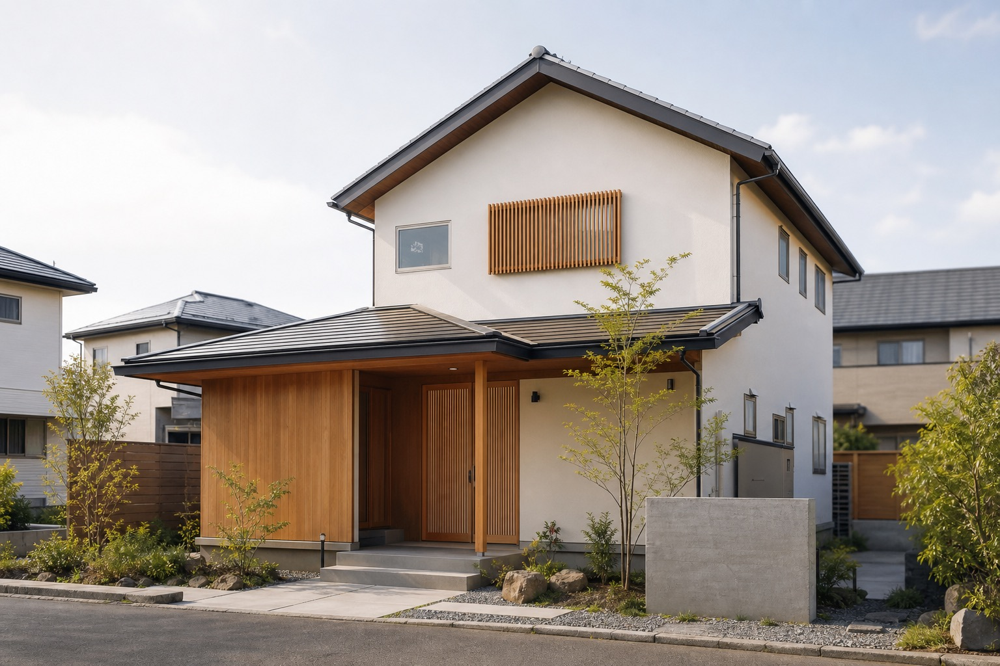
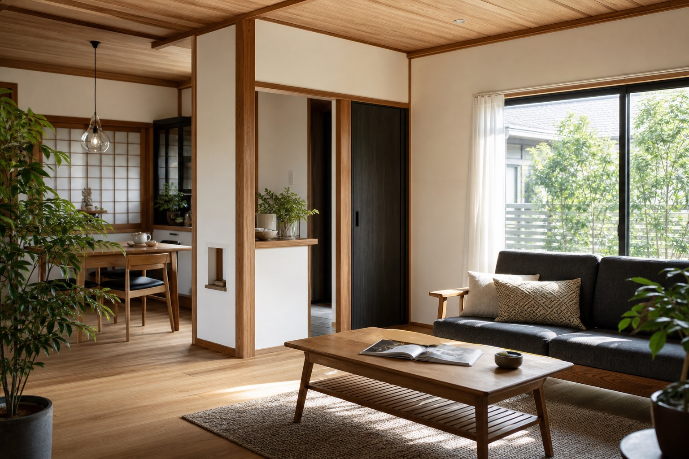
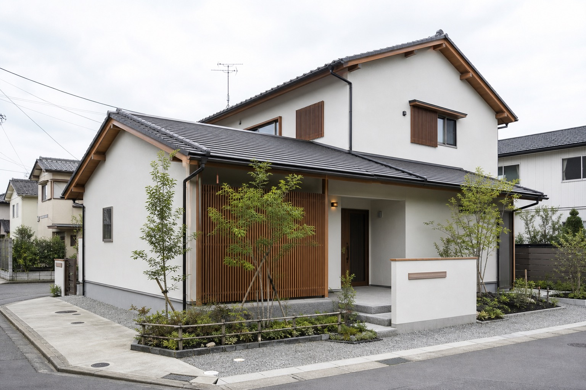
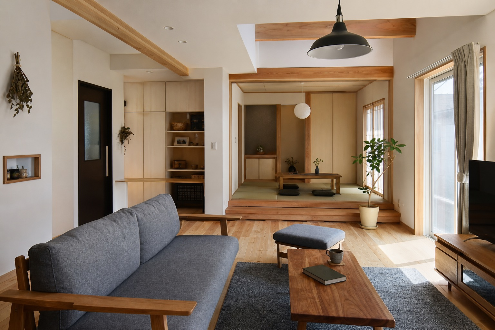
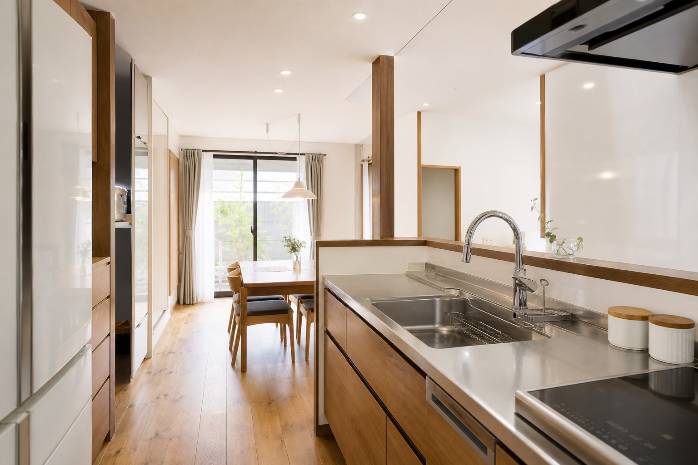

内装リフォーム
クロス、床、間取り変更、収納スペースの増設、和室から洋室への変更など。

仮画像仙台市の内装リフォーム・新築工事
内装、水回り、外装、介護リフォームから新築・増改築まで。自社施工で、暮らしに合わせた工事を一つずつ。
Concept
公式サイトでは「地域密着」「自社施工」「職人と直接話せること」を強みとして発信されています。今回のデモでは、その良さが一目で伝わるよう、職人感と住まいの空気感を前面に出しました。
余計な装飾を抑え、写真、短いコピー、相談導線で構成。小さな補修から住まい全体の改修まで、安心して相談できる印象を高めます。

Service
クロス、床、間取り変更、収納スペースの増設、和室から洋室への変更など。
キッチン、浴室、トイレ、洗面台など。築年数や使い勝手に合わせて設備を検討。
外壁、屋根、雨漏り、葺き替え、カバー工事、小さな補修工事まで相談可能。
手すり、段差解消、引き戸への変更、スロープ設置など。助成金相談の記載あり。
飲食店やサロンなどの内外装。和風・洋風・アジアンテイストへの対応を掲載。
国家資格を持つ職人に直接相談し、耐久性・耐震性も考慮した住まいづくり。
Strength
Gallery
既存サイトでは施工事例カテゴリは確認できますが、ここでは実在しない案件名を作らず、差し替え前提の写真枠として見せます。



Consultation
公式サイトでは「メールは24時間受付中」「ご相談・お見積りは無料」と掲載されています。電話とフォームを自然に選べる導線に整理します。
Company
Contact
このフォームは営業提案用サンプルです。実際には送信されません。